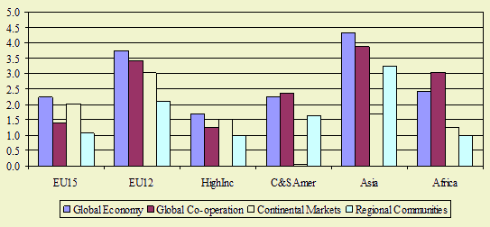

Because the future is uncertain, EUruralis 2.0 is built on four scenarios. Key
driving forces within scenarios are political developments on both European
and global scales, macro-economic growth and demographic developments. Other
important drivers are technology, climate change and consumer behaviour. EU
and national policies are also important.
The four scenarios also relate to different plausible developments defined by two axes. The vertical axis symbolizes a global approach as opposed to a more regional approach to problems and strategies. The horizontal axis represents market-orientation versus a higher level of governmental intervention. This results in four scenarios illustrated in figure 1.
Figure 1 – the four scenarios.
Demography
Depending on the scenario, in the period 2000-2030 Europe's (EU27) population
will grow slightly, as in Global Economy and in Global Cooperation, or decrease
as in Continental Markets and Regional Communities. In all scenarios the average
age of the population will rise sharply
Figure 2 – Demografic development for the four
scenarios
Macro-economic growth
Income is an important driver. Growth of income affects the future of rural
areas directly and indirectly in a variety of ways. GDP is assumed to grow in
all scenarios for all continents. GDP growth per capita is a measure of income
increase. Between the scenarios there are significant differences in the rate
of growth. In general the Global Economy scenario shows the highest growth rates.
Asia shows the highest growth rates of the groups of countries.
The income growth rate in EU12 countries is higher than in EU15 countries in
all scenarios, especially in the Global Cooperation scenario.

Figure 3 – Macro-economic growth per year between
2000 and 2030